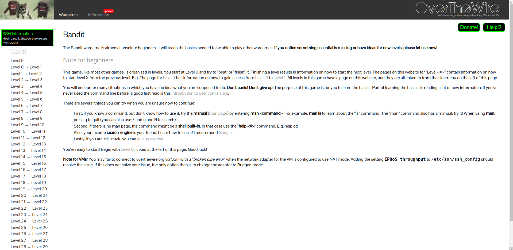
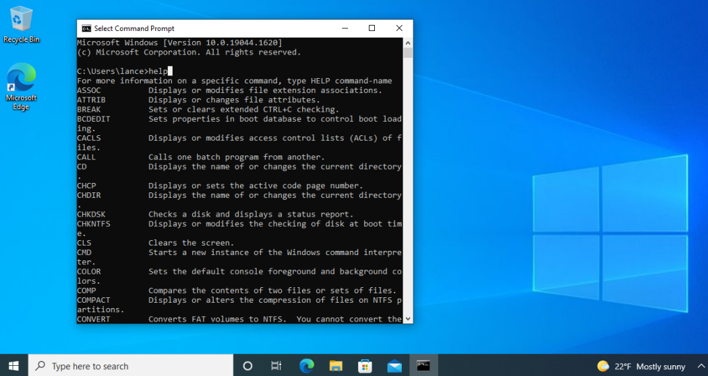
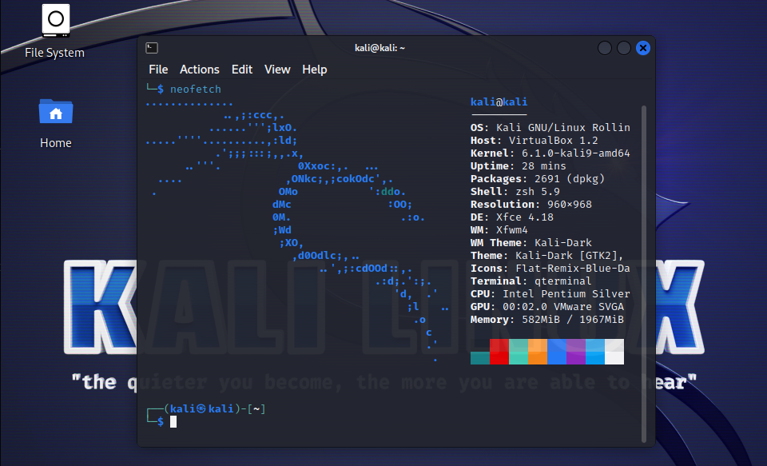
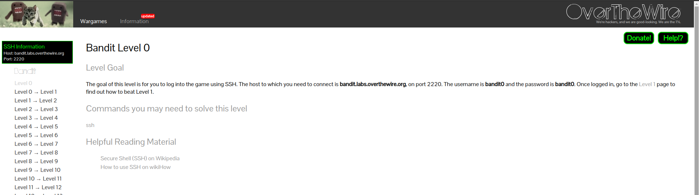

OverTheWire is a website which hosts wargames. A wargame is a cyber-security challenge which involves the application of actual cyber-security concepts and tools in order to accomplish some sort of goal. This goal is usually capturing a flag (acquiring a special key hidden within a system). This differs from tests and exams, which are usually knowledge-based. Wargames are far more focused on your applicable skills.
Bandit is OverTheWire’s introductory wargame. With Bandit, there are 33 “levels”. Each “level” is a machine that the user can connect to. Each machine contains a flag, which is a file that contains text. When you start level 0, you connect to the level 0 machine and acquire the flag. Then you connect to the level 1 machine, and you input the flag you found at level 0 as the password to access the machine. With each machine, finding the flag gets more challenging.
By navigating through the different levels of Bandit, players are exposed to a variety of Linux command-line tools and techniques commonly used in cyber-security. Each level presents a unique challenge where the player must use their knowledge of Linux commands and system administration to find hidden flags.
The Bandit wargame can be accessed on OverTheWire’s website.
The specific webpage can be accessed via this link: https://overthewire.org/wargames/bandit/

The introductory page gives you a basic overview of the wargame. You could give the webpage a quick read, but the information basically boils down to:
Note the part where the webpage introduction says that you’re going to need to use command-line commands. What are command-line interfaces?
 
What you’re seeing in the screenshots above are examples of command-line interfaces. The first screenshot shows you the Command Prompt on Windows 10. The user inputted the ‘help’ command, which returns a list of common commands on Windows. The second screenshot shows you a Linux terminal. The user inputted the ‘neofetch’ command, which returned some system information.
You can find these command-line interfaces on any consumer operating system (Windows, MacOS, Linux). They are special applications on your system which allow you to communicate with your system by inputting commands. When a typical user communicates with their system, they might click on a button or a graphic of some kind, or they’ll search for an application to help them do something. A command-line interface allows you to just type in a command, and get the system to immediately execute upon that command without having to search for an application or particular button in the system settings.
Command-line interfaces, though less accessible due to the knowledge of commands required, are a lot more efficient and flexible. Command-line interfaces will also often allow for scripting and automation, which means you can get your system to follow a sequence of commands or to automatically execute upon some commands. When it can be properly used, a command-line interface gives the user a lot of control over their system, being a very powerful tool. It is because of this that many important tools, especially those utilized in cyber-security, are developed specifically for command-line interfaces.
Since Bandit requires the use of command-line tools, you need to open up your own command-line interface. These tools can be used on Windows and Mac systems, but the set up would be quite impractical. It’s a lot more impractical to install a virtual machine, and use the virtual machine’s command-line. For this walkthrough, we’re going to be using a Kali Linux virtual machine.
Setting up a virtual machine is pretty simple, here’s a brief setup plan for you:
By the end of this, you should have your own Kali Linux virtual machine, which you can use for any wargame, CTF, or other pentesting endeavours.

In order to connect to the machine, we need to use SSH. SSH (Secure Shell) is a tool that allows a user on one computer to remotely access the command-line interface of another computer.
Locate the terminal on your virtual machine, and type in SSH.